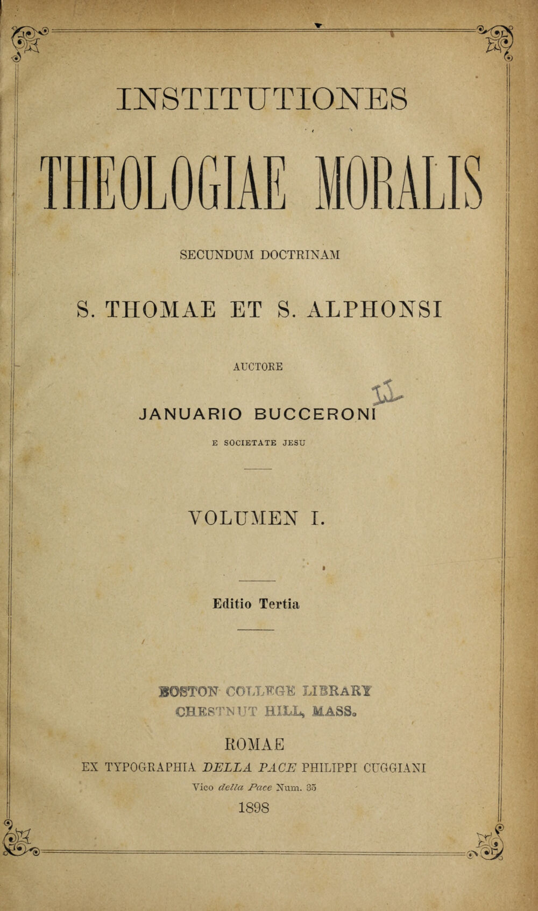
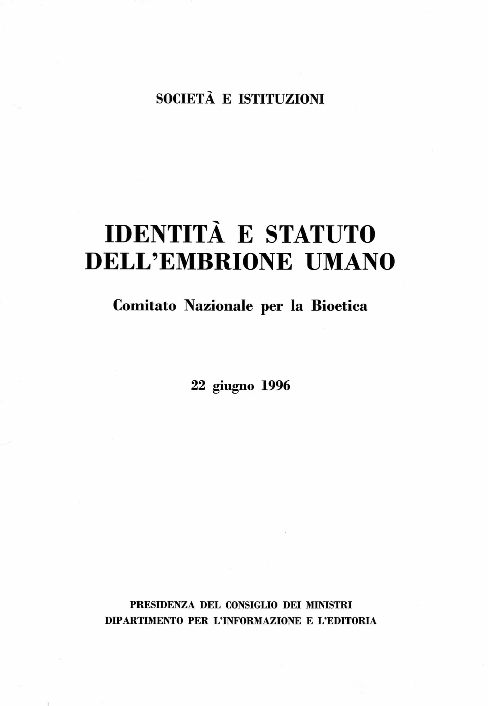

1:03:06 · 9 OPERE
Perché i cattolici sono contrari all'aborto?
Il filo del discorso
Dr Divago affronta l’opposizione cattolica all’aborto attraverso il linguaggio del dibattito e le sue premesse teologiche. Il manuale latino di Bucceroni introduce l’esigenza di definizioni precise, mentre le etichette pro-life e pro-choice sono criticate come forme di polarizzazione. La distinzione fra essere umano e persona conduce alla lettura del parere CNB del 1996, che la scheda ricolloca nel contesto: il passo sulla natura razionale non riduce lo status personale all’esercizio attuale delle capacità.
Leggi la sintesi completaRiduci la sintesi
La successiva analogia con trapianti e perdita di coscienza richiede di separare coma, stato vegetativo e morte encefalica. Donna, madre, scelta e dignità sono poi discussi secondo la posizione etica del relatore, con richiami a Subverted, alla Bibbia e a Spillover. La parte finale passa da creato e increato alla creazione dell’anima, a Genesi e alla Sapienza dei Proverbi. La dottrina religiosa è distinta dalle informazioni biologiche e dalle norme civili; il confronto con i documenti cattolici precisa anche l’immortalità dell’anima e il diverso statuto della questione dell’animazione. Il richiamo a Freud e Charcot introduce infine una critica del riduzionismo, che non vale come prova sul dolore fetale. La conclusione propone la responsabilità verso chi è debole, mantenendo attribuiti i giudizi e distinguendo argomenti morali, ricerca medica e diritto.
I libri nel discorso

Institutiones theologiae moralis secundum doctrinam S. Thomae et S. Alphonsi
Note sul riferimento
Frontespizio della terza edizione 1898, volume I: Frontespizio del volume I, terza edizione, Roma, Typographia della Pace Philippi Cuggiani, 1898; scansione Boston College, foglio digitale 5.
Frontespizio autentico con titolo, autore, volume, edizione, tipografo e anno leggibili. L’immagine 1898 illustra la stessa opera, ma non riproduce la quinta edizione 1908 citata nel video. Non è una copertina esterna, né una pagina di Casus conscientiae, e non viene presentata come l’esemplare del relatore.
Manuale latino di istituzioni di teologia morale del 1908, autore Gennaro/Ianuarius Bucceroni esplicito a 297 secondi; titolo bibliografico riscontrato nei cataloghi.

Costituzione della Repubblica Italiana
Note sul riferimento
Copertina dell’edizione Intra aggiornata al 2023: Intra · 2023 · introduzione di Umberto Vincenti
Copertina autentica del testo integrale, aggiornata alla legge costituzionale 26 settembre 2023 n.1. È successiva al filmato del 2019 e non rappresenta la versione storica letta dal relatore. Umberto Vincenti firma l’introduzione.
La persona umana nella Costituzione è richiamata esplicitamente; nessun articolo viene precisato.

Identità e statuto dell’embrione umano
Note sul riferimento
Frontespizio ufficiale del parere CNB, 22 giugno 1996: Frontespizio del documento del 22 giugno 1996, Presidenza del Consiglio dei Ministri, Dipartimento per l’Informazione e l’Editoria, collana Società e istituzioni. Pagina PDF 1.
Prima pagina autentica del documento pubblico, con titolo, autore istituzionale e data. È dichiarata frontespizio, non copertina libraria ricostruita. Riproduzione dalla scansione ufficiale. Il testo viene distinto dal riassunto e dalle inferenze del relatore.
Titolo Identità e statuto dell’embrione umano, Comitato Nazionale per la Bioetica e data 22 giugno 1996 espliciti; passo principale al §2.3, pp.9–10.

Subverted. How I Helped the Sexual Revolution Hijack the Women’s Movement
Note sul riferimento
Copertina: Ignatius Press, edizione in brossura del 2 aprile 2019, 224 pagine.
Copertina autentica Ignatius rossa e magenta a retino, titolo Subverted giallo, autrice e sottotitolo bianchi. È la specifica brossura 2019 del catalogo editoriale, non una edizione riconosciuta nel filmato. Il racconto personale e la tesi dell’autrice sul femminismo restano attribuiti, senza assumerli come spiegazione completa e condivisa di tutti i movimenti delle donne.
Titolo Subverted e autrice Sue Ellen Browder riconoscibili, benché il nome sia corrotto dalla trascrizione automatica.

Bibbia
Note sul riferimento
Copertina: San Paolo, 2014 · Nuova Versione dai Testi Antichi · edizione di riferimento
Bibbia esplicita nella discussione sull’assenza di un termine o di una trattazione dell’aborto; nessun passo specifico in questa menzione.

Spillover
Note sul riferimento
Copertina: Adelphi · Spillover · edizione di riferimento
Immagine associata all’ISBN di riferimento e controllata visivamente; edizione e traduzione non identificate come quelle citate o lette nel video.
Titolo Spillover esplicito nella critica a un libro sul quale il relatore ricorda di avere scritto un articolo.

Divina Commedia
Identificazione probabile
Note sul riferimento
Copertina: Giunti Barbera · Passepartout, 2021 · edizione di riferimento
Fatti non foste a viver come bruti: allusione probabile a Inferno XXVI,119–120, autore e titolo non pronunciati.

Genesi
Note sul riferimento
Copertina: Einaudi, I libri della Bibbia / Einaudi Tascabili, 2000; introduzione di Steven Rose
Copertina dell’edizione autonoma Genesi, nella serie I libri della Bibbia, con introduzione di Steven Rose. Edizione scelta come riferimento iconografico; nessuna edizione è confermata nel video.
Genesi esplicita nella riflessione sul creato e poi a 3249 secondi nel racconto di Adamo e del soffio, Genesi2,7.
Proverbi
Identificazione probabile
Note sul riferimento
Copertina della Bibbia che contiene Proverbi: San Paolo, 2014 · Nuova Versione dai Testi Antichi · edizione di riferimento
Copertina dell’intera Bibbia. Non rappresenta un’edizione autonoma dei Proverbi e non identifica l’edizione citata nel video.
Sapienza creata all’inizio degli atti: probabile Proverbi8,22, pur attribuito oralmente alla Genesi; titolo non pronunciato.